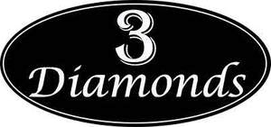

Trade Mark Journal No.2025/039 26 September 2025
UK00004264387 15 September 2025 (21)

- Class 21
- Household utensils for cleaning, brushes and brush-making materials; Cookware and tableware, except forks, knives and spoons; Tableware, except forks, knives and spoons; Cookware, except forks, knives and spoons; Spatulas [kitchen utensils]; Mixing spoons [kitchen utensils]; Tenderizers [kitchen utensils]; Tableware, other than knives, forks and spoons; Household or kitchen utensils; Kitchen utensils; Molds [kitchen utensils]; Moulds [kitchen utensils]; Egg separators [kitchen utensils]; Kitchen utensils of silicon; Sieves [household utensils]; Basting spoons [cooking utensils]; Graters [household utensils]; Aluminium moulds [kitchen utensils]; Dishes [household utensils]; Abrasive instruments for kitchen [cleaning] purposes; Kitchen utensils, not of precious metal; Graters [non-electric household utensils]; Tortilla presses, non-electric [kitchen utensils]; Abrasive discs for kitchen [cleaning] purposes; Utensils for household purposes; Wire baskets [cooking utensils]; Basting spoons, for kitchen use; Spoons (Basting -), for kitchen use; Household utensils; Tableware, cookware and containers; Abrasive sponges for kitchen [cleaning] use; Brushes (except paintbrushes); Brushes, except paintbrushes; Cooking utensils, non-electric; Cinder sifters [household utensils]; Presses (Garlic -) [kitchen utensils]; Garlic presses [kitchen utensils]; Sifters [household utensils]; Cosmetic and toilet utensils; Cosmetic utensils; Spatulas for kitchen use; Baking utensils; Ceramics for kitchen use; Cooking utensils; Trivets [table utensils]; Non-electric griddles [cooking utensils]; Griddles [non-electric cooking utensils]; Laundry balls for use as household utensils; Glass scrapers for cleaning purposes; Containers for household or kitchen use; Toilet and bathroom cleaning utensils ; Brushes for cleaning babies' feeding bottles; Cutlery trays; Metal baskets for household purposes; Serving scoops [household or kitchen utensil]; Brushes for household purposes; Utensils for cosmetic purposes; Plastic bowls [household containers]; Griddles [cooking utensils]; Household gloves for cleaning purposes; Glass cleaning implements; Graters for kitchen use; Simmer rings [cooking utensils]; Pestles for kitchen use; Porcelain articles for decorative purposes; Pot cleaning brushes; Household or kitchen containers; Grills [cooking utensils]; Cloths for cleaning purposes; Cooking utensils for barbecue use; Polishing materials for making shiny, except preparations, paper and stone; Brushes and brush-making articles.
Muhammad Zubair
3 Diamonds Global Ltd